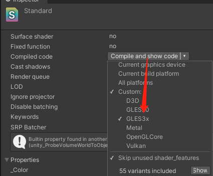
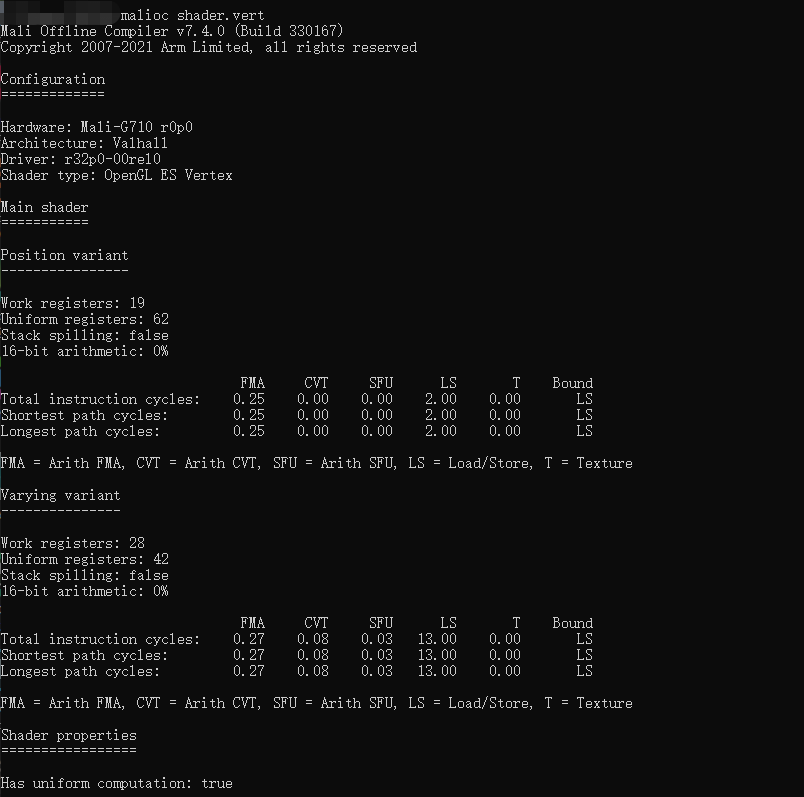

引言
在智能手机专用的SoC（处理器）领域，最常见的GPU品牌就是高通Adreno、Imagination PowerVR以及ARM Mali。对于目前市面上主流手机中华为，三星，谷歌等手机较多均使用Mali GPU架构进行研发。

图片来源：https://www.eet-china.com/news/202112160927.html
所以在手游研发中，TA更加关注在Mali GPU架构下材质的性能消耗。
所以本文主要记录自己使用mali compiler 检测 Unity shader的代码逻辑复杂度及mali compiler的相关指数及shader优化建议。
下载arm Developer
Mali Offline Compiler | Mali Offline Compiler Legacy Downloads - Arm Developer
在Unity中导出shader
选择shader，设置GLES3x的格式进行编译

将shader进行拆分为vert frag
将#ifdef VERTEX到#endif之间的代码复制出来保存到vertex，Note：#version 300 es 必须放在第一行。(不要带上def)
vert
1
2
3
4
5
6
7
8
9
10
11
12
13
14
15
16
17
18
19
20
21
22
23
24
25
26
27
28
29
30
31
32
33
34
35
36
37
38
39
40
41
42
43
44
45
46
47
48
49
50
51
52
53
54
55
56
57
58
59
60
61
62
63
64
65
66
67
68
69
70
71
72
73
74
75
76
77
| #version 300 es
#define HLSLCC_ENABLE_UNIFORM_BUFFERS 1
#if HLSLCC_ENABLE_UNIFORM_BUFFERS
#define UNITY_UNIFORM
#else
#define UNITY_UNIFORM uniform
#endif
#define UNITY_SUPPORTS_UNIFORM_LOCATION 1
#if UNITY_SUPPORTS_UNIFORM_LOCATION
#define UNITY_LOCATION(x) layout(location = x)
#define UNITY_BINDING(x) layout(binding = x, std140)
#else
#define UNITY_LOCATION(x)
#define UNITY_BINDING(x) layout(std140)
#endif
uniform vec3 _WorldSpaceCameraPos;
uniform vec4 hlslcc_mtx4x4unity_ObjectToWorld[4];
uniform vec4 hlslcc_mtx4x4unity_WorldToObject[4];
uniform vec4 hlslcc_mtx4x4unity_MatrixVP[4];
uniform vec4 _MainTex_ST;
uniform vec4 _DetailAlbedoMap_ST;
uniform mediump float _UVSec;
in highp vec4 in_POSITION0;
in mediump vec3 in_NORMAL0;
in highp vec2 in_TEXCOORD0;
in highp vec2 in_TEXCOORD1;
out highp vec4 vs_TEXCOORD0;
out highp vec4 vs_TEXCOORD1;
out highp vec4 vs_TEXCOORD2;
out highp vec4 vs_TEXCOORD3;
out highp vec4 vs_TEXCOORD4;
out mediump vec4 vs_TEXCOORD5;
out highp vec4 vs_TEXCOORD7;
out highp vec3 vs_TEXCOORD8;
vec4 u_xlat0;
bool u_xlatb0;
vec4 u_xlat1;
float u_xlat6;
void main()
{
u_xlat0 = in_POSITION0.yyyy * hlslcc_mtx4x4unity_ObjectToWorld[1];
u_xlat0 = hlslcc_mtx4x4unity_ObjectToWorld[0] * in_POSITION0.xxxx + u_xlat0;
u_xlat0 = hlslcc_mtx4x4unity_ObjectToWorld[2] * in_POSITION0.zzzz + u_xlat0;
u_xlat0 = u_xlat0 + hlslcc_mtx4x4unity_ObjectToWorld[3];
u_xlat1 = u_xlat0.yyyy * hlslcc_mtx4x4unity_MatrixVP[1];
u_xlat1 = hlslcc_mtx4x4unity_MatrixVP[0] * u_xlat0.xxxx + u_xlat1;
u_xlat1 = hlslcc_mtx4x4unity_MatrixVP[2] * u_xlat0.zzzz + u_xlat1;
gl_Position = hlslcc_mtx4x4unity_MatrixVP[3] * u_xlat0.wwww + u_xlat1;
#ifdef UNITY_ADRENO_ES3
u_xlatb0 = !!(_UVSec==0.0);
#else
u_xlatb0 = _UVSec==0.0;
#endif
u_xlat0.xy = (bool(u_xlatb0)) ? in_TEXCOORD0.xy : in_TEXCOORD1.xy;
vs_TEXCOORD0.zw = u_xlat0.xy * _DetailAlbedoMap_ST.xy + _DetailAlbedoMap_ST.zw;
vs_TEXCOORD0.xy = in_TEXCOORD0.xy * _MainTex_ST.xy + _MainTex_ST.zw;
u_xlat0.xyz = in_POSITION0.yyy * hlslcc_mtx4x4unity_ObjectToWorld[1].xyz;
u_xlat0.xyz = hlslcc_mtx4x4unity_ObjectToWorld[0].xyz * in_POSITION0.xxx + u_xlat0.xyz;
u_xlat0.xyz = hlslcc_mtx4x4unity_ObjectToWorld[2].xyz * in_POSITION0.zzz + u_xlat0.xyz;
u_xlat0.xyz = hlslcc_mtx4x4unity_ObjectToWorld[3].xyz * in_POSITION0.www + u_xlat0.xyz;
vs_TEXCOORD1.xyz = u_xlat0.xyz + (-_WorldSpaceCameraPos.xyz);
vs_TEXCOORD8.xyz = u_xlat0.xyz;
vs_TEXCOORD1.w = 0.0;
vs_TEXCOORD2 = vec4(0.0, 0.0, 0.0, 0.0);
vs_TEXCOORD3 = vec4(0.0, 0.0, 0.0, 0.0);
u_xlat0.x = dot(in_NORMAL0.xyz, hlslcc_mtx4x4unity_WorldToObject[0].xyz);
u_xlat0.y = dot(in_NORMAL0.xyz, hlslcc_mtx4x4unity_WorldToObject[1].xyz);
u_xlat0.z = dot(in_NORMAL0.xyz, hlslcc_mtx4x4unity_WorldToObject[2].xyz);
u_xlat6 = dot(u_xlat0.xyz, u_xlat0.xyz);
u_xlat6 = inversesqrt(u_xlat6);
vs_TEXCOORD4.xyz = vec3(u_xlat6) * u_xlat0.xyz;
vs_TEXCOORD4.w = 0.0;
vs_TEXCOORD5 = vec4(0.0, 0.0, 0.0, 0.0);
vs_TEXCOORD7 = vec4(0.0, 0.0, 0.0, 0.0);
return;
}
|
frag
1
2
3
4
5
6
7
8
9
10
11
12
13
14
15
16
17
18
19
20
21
22
23
24
25
26
27
28
29
30
31
32
33
34
35
36
37
38
39
40
41
42
43
44
45
46
47
48
49
50
51
52
53
54
55
56
57
58
59
60
61
62
63
64
65
66
67
68
69
70
71
72
73
74
75
76
77
78
79
80
81
82
83
84
85
86
87
88
89
90
91
92
93
94
95
96
97
98
99
100
101
102
103
104
105
106
107
108
109
110
111
112
113
114
115
116
117
118
119
120
121
122
123
124
125
126
127
128
129
130
131
132
133
134
135
136
137
138
139
140
141
142
143
144
145
146
147
148
149
150
151
152
153
154
155
156
157
158
159
160
161
162
163
164
165
166
167
168
169
170
171
172
173
174
175
176
177
178
179
180
181
182
183
184
185
186
187
188
189
190
191
192
193
194
195
196
197
198
199
200
201
202
203
204
205
206
207
208
209
210
211
212
213
214
215
216
217
218
219
220
221
222
223
224
225
226
227
228
229
230
231
232
233
234
235
236
237
238
239
240
241
242
243
244
245
246
247
248
249
250
251
252
253
254
255
256
257
258
259
260
261
262
263
264
265
266
267
268
269
270
271
272
273
274
275
276
277
278
| #version 300 es
#ifdef GL_EXT_shader_texture_lod
#extension GL_EXT_shader_texture_lod : enable
#endif
precision highp float;
precision highp int;
#define HLSLCC_ENABLE_UNIFORM_BUFFERS 1
#if HLSLCC_ENABLE_UNIFORM_BUFFERS
#define UNITY_UNIFORM
#else
#define UNITY_UNIFORM uniform
#endif
#define UNITY_SUPPORTS_UNIFORM_LOCATION 1
#if UNITY_SUPPORTS_UNIFORM_LOCATION
#define UNITY_LOCATION(x) layout(location = x)
#define UNITY_BINDING(x) layout(binding = x, std140)
#else
#define UNITY_LOCATION(x)
#define UNITY_BINDING(x) layout(std140)
#endif
uniform mediump vec4 _WorldSpaceLightPos0;
uniform vec4 unity_SpecCube0_BoxMax;
uniform vec4 unity_SpecCube0_BoxMin;
uniform vec4 unity_SpecCube0_ProbePosition;
uniform mediump vec4 unity_SpecCube0_HDR;
uniform vec4 unity_SpecCube1_BoxMax;
uniform vec4 unity_SpecCube1_BoxMin;
uniform vec4 unity_SpecCube1_ProbePosition;
uniform mediump vec4 unity_SpecCube1_HDR;
uniform mediump vec4 _LightColor0;
uniform mediump vec4 _Color;
uniform mediump float _Metallic;
uniform float _Glossiness;
uniform mediump float _OcclusionStrength;
UNITY_LOCATION(0) uniform mediump sampler2D _MainTex;
UNITY_LOCATION(1) uniform mediump sampler2D _OcclusionMap;
UNITY_LOCATION(2) uniform mediump samplerCube unity_SpecCube0;
UNITY_LOCATION(3) uniform mediump samplerCube unity_SpecCube1;
in highp vec4 vs_TEXCOORD0;
in highp vec4 vs_TEXCOORD1;
in highp vec4 vs_TEXCOORD4;
in highp vec3 vs_TEXCOORD8;
layout(location = 0) out mediump vec4 SV_Target0;
vec3 u_xlat0;
mediump vec3 u_xlat16_0;
vec3 u_xlat1;
bool u_xlatb1;
mediump vec3 u_xlat16_2;
mediump vec3 u_xlat16_3;
mediump vec4 u_xlat16_4;
vec3 u_xlat5;
mediump vec4 u_xlat16_5;
bool u_xlatb5;
vec3 u_xlat6;
vec3 u_xlat7;
vec3 u_xlat8;
bvec3 u_xlatb8;
mediump vec3 u_xlat16_9;
bvec3 u_xlatb10;
mediump vec3 u_xlat16_11;
mediump vec3 u_xlat16_12;
float u_xlat13;
float u_xlat14;
vec3 u_xlat22;
mediump vec3 u_xlat16_22;
mediump vec3 u_xlat16_24;
float u_xlat26;
float u_xlat27;
float u_xlat39;
float u_xlat40;
mediump float u_xlat16_40;
mediump float u_xlat16_41;
mediump float u_xlat16_42;
mediump float u_xlat16_43;
float u_xlat44;
bool u_xlatb44;
mediump float u_xlat16_48;
void main()
{
u_xlat16_0.xyz = texture(_MainTex, vs_TEXCOORD0.xy).xyz;
u_xlat1.xyz = u_xlat16_0.xyz * _Color.xyz;
u_xlat16_2.xyz = _Color.xyz * u_xlat16_0.xyz + vec3(-0.0399999991, -0.0399999991, -0.0399999991);
u_xlat16_2.xyz = vec3(vec3(_Metallic, _Metallic, _Metallic)) * u_xlat16_2.xyz + vec3(0.0399999991, 0.0399999991, 0.0399999991);
u_xlat16_41 = (-_Metallic) * 0.959999979 + 0.959999979;
u_xlat16_3.xyz = u_xlat1.xyz * vec3(u_xlat16_41);
u_xlat0.x = dot(vs_TEXCOORD4.xyz, vs_TEXCOORD4.xyz);
u_xlat0.x = inversesqrt(u_xlat0.x);
u_xlat0.xyz = u_xlat0.xxx * vs_TEXCOORD4.xyz;
u_xlat39 = dot(vs_TEXCOORD1.xyz, vs_TEXCOORD1.xyz);
u_xlat39 = inversesqrt(u_xlat39);
u_xlat1.xyz = vec3(u_xlat39) * vs_TEXCOORD1.xyz;
u_xlat16_40 = texture(_OcclusionMap, vs_TEXCOORD0.xy).y;
u_xlat16_42 = (-_OcclusionStrength) + 1.0;
u_xlat16_42 = u_xlat16_40 * _OcclusionStrength + u_xlat16_42;
u_xlat40 = (-_Glossiness) + 1.0;
u_xlat16_4.x = dot(u_xlat1.xyz, u_xlat0.xyz);
u_xlat16_4.x = u_xlat16_4.x + u_xlat16_4.x;
u_xlat16_4.xyz = u_xlat0.xyz * (-u_xlat16_4.xxx) + u_xlat1.xyz;
#ifdef UNITY_ADRENO_ES3
u_xlatb5 = !!(0.0<unity_SpecCube0_ProbePosition.w);
#else
u_xlatb5 = 0.0<unity_SpecCube0_ProbePosition.w;
#endif
if(u_xlatb5){
u_xlat5.x = dot(u_xlat16_4.xyz, u_xlat16_4.xyz);
u_xlat5.x = inversesqrt(u_xlat5.x);
u_xlat5.xyz = u_xlat16_4.xyz * u_xlat5.xxx;
u_xlat6.xyz = (-vs_TEXCOORD8.xyz) + unity_SpecCube0_BoxMax.xyz;
u_xlat6.xyz = u_xlat6.xyz / u_xlat5.xyz;
u_xlat7.xyz = (-vs_TEXCOORD8.xyz) + unity_SpecCube0_BoxMin.xyz;
u_xlat7.xyz = u_xlat7.xyz / u_xlat5.xyz;
u_xlatb8.xyz = lessThan(vec4(0.0, 0.0, 0.0, 0.0), u_xlat5.xyzx).xyz;
{
vec3 hlslcc_movcTemp = u_xlat6;
hlslcc_movcTemp.x = (u_xlatb8.x) ? u_xlat6.x : u_xlat7.x;
hlslcc_movcTemp.y = (u_xlatb8.y) ? u_xlat6.y : u_xlat7.y;
hlslcc_movcTemp.z = (u_xlatb8.z) ? u_xlat6.z : u_xlat7.z;
u_xlat6 = hlslcc_movcTemp;
}
u_xlat44 = min(u_xlat6.y, u_xlat6.x);
u_xlat44 = min(u_xlat6.z, u_xlat44);
u_xlat6.xyz = vs_TEXCOORD8.xyz + (-unity_SpecCube0_ProbePosition.xyz);
u_xlat5.xyz = u_xlat5.xyz * vec3(u_xlat44) + u_xlat6.xyz;
} else {
u_xlat5.xyz = u_xlat16_4.xyz;
}
u_xlat16_43 = (-u_xlat40) * 0.699999988 + 1.70000005;
u_xlat16_43 = u_xlat40 * u_xlat16_43;
u_xlat16_43 = u_xlat16_43 * 6.0;
u_xlat16_5 = textureLod(unity_SpecCube0, u_xlat5.xyz, u_xlat16_43);
u_xlat16_9.x = u_xlat16_5.w + -1.0;
u_xlat16_9.x = unity_SpecCube0_HDR.w * u_xlat16_9.x + 1.0;
u_xlat16_9.x = log2(u_xlat16_9.x);
u_xlat16_9.x = u_xlat16_9.x * unity_SpecCube0_HDR.y;
u_xlat16_9.x = exp2(u_xlat16_9.x);
u_xlat16_9.x = u_xlat16_9.x * unity_SpecCube0_HDR.x;
u_xlat16_22.xyz = u_xlat16_5.xyz * u_xlat16_9.xxx;
#ifdef UNITY_ADRENO_ES3
u_xlatb44 = !!(unity_SpecCube0_BoxMin.w<0.999989986);
#else
u_xlatb44 = unity_SpecCube0_BoxMin.w<0.999989986;
#endif
if(u_xlatb44){
#ifdef UNITY_ADRENO_ES3
u_xlatb44 = !!(0.0<unity_SpecCube1_ProbePosition.w);
#else
u_xlatb44 = 0.0<unity_SpecCube1_ProbePosition.w;
#endif
if(u_xlatb44){
u_xlat44 = dot(u_xlat16_4.xyz, u_xlat16_4.xyz);
u_xlat44 = inversesqrt(u_xlat44);
u_xlat6.xyz = u_xlat16_4.xyz * vec3(u_xlat44);
u_xlat7.xyz = (-vs_TEXCOORD8.xyz) + unity_SpecCube1_BoxMax.xyz;
u_xlat7.xyz = u_xlat7.xyz / u_xlat6.xyz;
u_xlat8.xyz = (-vs_TEXCOORD8.xyz) + unity_SpecCube1_BoxMin.xyz;
u_xlat8.xyz = u_xlat8.xyz / u_xlat6.xyz;
u_xlatb10.xyz = lessThan(vec4(0.0, 0.0, 0.0, 0.0), u_xlat6.xyzx).xyz;
{
vec3 hlslcc_movcTemp = u_xlat7;
hlslcc_movcTemp.x = (u_xlatb10.x) ? u_xlat7.x : u_xlat8.x;
hlslcc_movcTemp.y = (u_xlatb10.y) ? u_xlat7.y : u_xlat8.y;
hlslcc_movcTemp.z = (u_xlatb10.z) ? u_xlat7.z : u_xlat8.z;
u_xlat7 = hlslcc_movcTemp;
}
u_xlat44 = min(u_xlat7.y, u_xlat7.x);
u_xlat44 = min(u_xlat7.z, u_xlat44);
u_xlat7.xyz = vs_TEXCOORD8.xyz + (-unity_SpecCube1_ProbePosition.xyz);
u_xlat6.xyz = u_xlat6.xyz * vec3(u_xlat44) + u_xlat7.xyz;
} else {
u_xlat6.xyz = u_xlat16_4.xyz;
}
u_xlat16_4 = textureLod(unity_SpecCube1, u_xlat6.xyz, u_xlat16_43);
u_xlat16_11.x = u_xlat16_4.w + -1.0;
u_xlat16_11.x = unity_SpecCube1_HDR.w * u_xlat16_11.x + 1.0;
u_xlat16_11.x = log2(u_xlat16_11.x);
u_xlat16_11.x = u_xlat16_11.x * unity_SpecCube1_HDR.y;
u_xlat16_11.x = exp2(u_xlat16_11.x);
u_xlat16_11.x = u_xlat16_11.x * unity_SpecCube1_HDR.x;
u_xlat16_11.xyz = u_xlat16_4.xyz * u_xlat16_11.xxx;
u_xlat5.xyz = u_xlat16_9.xxx * u_xlat16_5.xyz + (-u_xlat16_11.xyz);
u_xlat22.xyz = unity_SpecCube0_BoxMin.www * u_xlat5.xyz + u_xlat16_11.xyz;
u_xlat16_22.xyz = u_xlat22.xyz;
}
u_xlat16_9.xyz = vec3(u_xlat16_42) * u_xlat16_22.xyz;
u_xlat5.xyz = (-vs_TEXCOORD1.xyz) * vec3(u_xlat39) + _WorldSpaceLightPos0.xyz;
u_xlat39 = dot(u_xlat5.xyz, u_xlat5.xyz);
u_xlat39 = max(u_xlat39, 0.00100000005);
u_xlat39 = inversesqrt(u_xlat39);
u_xlat5.xyz = vec3(u_xlat39) * u_xlat5.xyz;
u_xlat39 = dot(u_xlat0.xyz, (-u_xlat1.xyz));
u_xlat1.x = dot(u_xlat0.xyz, _WorldSpaceLightPos0.xyz);
#ifdef UNITY_ADRENO_ES3
u_xlat1.x = min(max(u_xlat1.x, 0.0), 1.0);
#else
u_xlat1.x = clamp(u_xlat1.x, 0.0, 1.0);
#endif
u_xlat0.x = dot(u_xlat0.xyz, u_xlat5.xyz);
#ifdef UNITY_ADRENO_ES3
u_xlat0.x = min(max(u_xlat0.x, 0.0), 1.0);
#else
u_xlat0.x = clamp(u_xlat0.x, 0.0, 1.0);
#endif
u_xlat13 = dot(_WorldSpaceLightPos0.xyz, u_xlat5.xyz);
#ifdef UNITY_ADRENO_ES3
u_xlat13 = min(max(u_xlat13, 0.0), 1.0);
#else
u_xlat13 = clamp(u_xlat13, 0.0, 1.0);
#endif
u_xlat16_42 = u_xlat13 + u_xlat13;
u_xlat16_42 = u_xlat13 * u_xlat16_42;
u_xlat16_42 = u_xlat16_42 * u_xlat40 + -0.5;
u_xlat16_48 = (-u_xlat1.x) + 1.0;
u_xlat16_11.x = u_xlat16_48 * u_xlat16_48;
u_xlat16_11.x = u_xlat16_11.x * u_xlat16_11.x;
u_xlat16_48 = u_xlat16_48 * u_xlat16_11.x;
u_xlat16_48 = u_xlat16_42 * u_xlat16_48 + 1.0;
u_xlat16_11.x = -abs(u_xlat39) + 1.0;
u_xlat16_24.x = u_xlat16_11.x * u_xlat16_11.x;
u_xlat16_24.x = u_xlat16_24.x * u_xlat16_24.x;
u_xlat16_11.x = u_xlat16_11.x * u_xlat16_24.x;
u_xlat16_42 = u_xlat16_42 * u_xlat16_11.x + 1.0;
u_xlat16_42 = u_xlat16_42 * u_xlat16_48;
u_xlat26 = u_xlat1.x * u_xlat16_42;
u_xlat14 = u_xlat40 * u_xlat40;
u_xlat14 = max(u_xlat14, 0.00200000009);
u_xlat27 = (-u_xlat14) + 1.0;
u_xlat40 = abs(u_xlat39) * u_xlat27 + u_xlat14;
u_xlat27 = u_xlat1.x * u_xlat27 + u_xlat14;
u_xlat39 = abs(u_xlat39) * u_xlat27;
u_xlat39 = u_xlat1.x * u_xlat40 + u_xlat39;
u_xlat39 = u_xlat39 + 9.99999975e-06;
u_xlat39 = 0.5 / u_xlat39;
u_xlat27 = u_xlat14 * u_xlat14;
u_xlat40 = u_xlat0.x * u_xlat27 + (-u_xlat0.x);
u_xlat0.x = u_xlat40 * u_xlat0.x + 1.0;
u_xlat27 = u_xlat27 * 0.318309873;
u_xlat0.x = u_xlat0.x * u_xlat0.x + 1.00000001e-07;
u_xlat0.x = u_xlat27 / u_xlat0.x;
u_xlat0.x = u_xlat0.x * u_xlat39;
u_xlat0.x = u_xlat1.x * u_xlat0.x;
u_xlat0.x = u_xlat0.x * 3.14159274;
u_xlat0.x = max(u_xlat0.x, 0.0);
u_xlat39 = u_xlat14 * u_xlat14 + 1.0;
u_xlat39 = float(1.0) / u_xlat39;
u_xlat16_42 = dot(u_xlat16_2.xyz, u_xlat16_2.xyz);
#ifdef UNITY_ADRENO_ES3
u_xlatb1 = !!(u_xlat16_42!=0.0);
#else
u_xlatb1 = u_xlat16_42!=0.0;
#endif
u_xlat1.x = u_xlatb1 ? 1.0 : float(0.0);
u_xlat0.x = u_xlat0.x * u_xlat1.x;
u_xlat16_41 = (-u_xlat16_41) + 1.0;
u_xlat16_41 = u_xlat16_41 + _Glossiness;
#ifdef UNITY_ADRENO_ES3
u_xlat16_41 = min(max(u_xlat16_41, 0.0), 1.0);
#else
u_xlat16_41 = clamp(u_xlat16_41, 0.0, 1.0);
#endif
u_xlat16_24.xyz = vec3(u_xlat26) * _LightColor0.xyz;
u_xlat1.xyz = u_xlat0.xxx * _LightColor0.xyz;
u_xlat16_42 = (-u_xlat13) + 1.0;
u_xlat16_48 = u_xlat16_42 * u_xlat16_42;
u_xlat16_48 = u_xlat16_48 * u_xlat16_48;
u_xlat16_42 = u_xlat16_42 * u_xlat16_48;
u_xlat16_12.xyz = (-u_xlat16_2.xyz) + vec3(1.0, 1.0, 1.0);
u_xlat16_12.xyz = u_xlat16_12.xyz * vec3(u_xlat16_42) + u_xlat16_2.xyz;
u_xlat0.xyz = u_xlat1.xyz * u_xlat16_12.xyz;
u_xlat0.xyz = u_xlat16_3.xyz * u_xlat16_24.xyz + u_xlat0.xyz;
u_xlat16_3.xyz = u_xlat16_9.xyz * vec3(u_xlat39);
u_xlat16_9.xyz = (-u_xlat16_2.xyz) + vec3(u_xlat16_41);
u_xlat16_2.xyz = u_xlat16_11.xxx * u_xlat16_9.xyz + u_xlat16_2.xyz;
u_xlat0.xyz = u_xlat16_3.xyz * u_xlat16_2.xyz + u_xlat0.xyz;
SV_Target0.xyz = u_xlat0.xyz;
SV_Target0.w = 1.0;
return;
}
|
运行编译
默认编译
cmd输入malioc 文件名.frag/vert即可看到编译结果

上图为malioc shader.vert运算结果
上图为malioc shader.frag运算结果
指定型号编译
可以通过 malioc 文件名 -c 硬件型号来指定Mali GPU编译。（frag 和 vert 均可指定型号进行特定编译）
上图为malioc shader.frag -c Mali-G78运算结果
上图为malioc shader.frag -c Mali-G72运算结果
参数详解
从上图可以直观看到shader 的相关属性和模拟硬件的相关信息。
在中间的列表，是对 Mali 着色器核心中的主要功能单元、算法、加载/存储单元、变化单元和纹理单元进行大致的循环成本细分。一般来说，最长的循环和最短的循环是一个很好的优化方向。我们可以先看以Mali-G72运算编译的详细信息：
上图为malioc shader.frag -c Mali-G72运算结果
硬件基础信息
首先可以看到使用Mali -G72 与 Mali -G78 编译后的结果返回结果有些不同。这是由于两个GPU的硬件架构不同所致。
上图为两个GPU编译后提示的架构细节
具体的细节可以参考下这位dalao所写的mali GPU架构演进，这里只讨论两者在性能优化的区别。
ARM Mali GPU架构演进
在Mali Valhall 架构的GPU，所有 Valhall GPU 都实现了两个并行处理引擎。所以前面所看到的在Mali - G72 Bifrost 架构下的Arithmetic 会被拆分为 FMA , CVT , SFU三个数据进行展示。（这三个数据我会在后面Shader信息部分进行解释）
上图为Valhall shader core （截选自Arm Mali GPU Training Series Ep 3.5 : Mali Offline Compiler）
IDVS shader variants
在Bifrost Valhall 家族的 Mali GPU 使用 index-draven vertex shading(IDVS)。它会在两个binaries编译vertex shaders，position shader，它只计算位置并为每个索引顶点执行，varying shader，它计算剩余的非位置顶点属性输出，并且只对作为剔除后幸存下来的可见图元的一部分的顶点执行。所以可以看到在使用mali compiler 编译处理顶点着色器时，会Position variant 和 Varying variant。
上图为malioc shader.vert-c Mali-G78的执行结果
Work registers
该shader工作使用的寄存器数量。可用的物理寄存器池在正在执行的着色器线程之间分配。因此，减少工作寄存器的使用可以增加可以同时执行的线程数，有助于保持 GPU工作忙碌。
上图为malioc shader.frag -c Mali-G72运算结果
Mali GPU 可以将数据从 API 集统一和统一缓冲区提升到着色器核心寄存器中。然后在每次绘制的基础上加载数据，而不是在每个着色器线程上加载。(比如在shader中Properties声明的常量)
Stack spilling
对于Valhall 和 Bifrost GPUs，可以看到是否有变量被放置到栈内存中。放置到栈中的内存对于GPU读取是性能消耗较大的。（降低才能提高性能）
16-bit arithmetic
以 16 位或更低精度执行的算术运算的百分比。数值越高代表shader性能越好。因为使用 mediump 选择的 16 位精度是 32 位精度下的 highp 的两倍。
Shader信息
Total Instruction Cycles
为程序生成的所有指令的累积执行周期数，与程序控制流无关。
Shortest Path Cycles
通过着色器程序的最短控制流路径的循环数的估计。该行根据设计中存在的功能单元数量对周期成本进行标准化。
Longest Path Cycles
通过着色器程序的最长控制流路径的循环数的估计。该行根据设计中存在的功能单元数量对周期成本进行标准化。并非总是可以根据静态分析确定最长路径，例如，如果统一变量控制循环迭代限制。所以这一行可能表示一个未知的周期计数（“N/A”）。
报告的统计数据按功能单元细分。在 Shortest Path Cycles 和 Longest Path Cycles 行中的一个或两个行中具有最高周期成本的单位列是一个很好的优化候选者。例如，最高值在 A（算术）列中的着色器是算术边界。通过减少其执行的数学运算的数量或精度来优化着色器。 Bound 列列出了循环计数最高的功能单元，这使您可以快速识别着色器代码中的瓶颈单元。
A = Arithmetic operations
数学运算操作符。具体代表了shader中sum multiply等操作
FMA Fused multiply accumulate
加减乘除运算符
CVT Arithmetic conversion
算术转换操作符
SFU Special functions unit
特殊功能单元
LS = Load/Store operation
读取和存储的操作
V = Varying operations
在shader中不同单位插值的消耗
T = Texture operations
采样贴图的消耗
Shader properties
shader 使用了能影响shader执行表现的相关语言特性信息、
这显示是否有任何计算仅依赖于文字常量或统一值，因此为绘制调用或计算分派中的每个线程产生相同的结果。mali 驱动能优化，但还有一定的消耗的。所以建议尽量把这系列的计算移植到在CPU上的application logic 。
Has side-effects
这显示此着色器是否具有在固定图形管道之外的内存中可见的副作用。可能由内存写入，图片存储，原子的使用。
Modifies coverage
这显示片段着色器是否具有可以通过着色器执行更改的覆盖掩码，例如，通过使用丢弃语句
具有可修改覆盖率的shader必须使用late ZS update，这会降低early ZS test在同一坐标上的later片段的效率
Uses late ZS test
这个显示片段shader是否包含了强制late ZS test的逻辑。
这禁用了early ZS test和hidden surface removal的使用，这可能会导致显著的效率损失
Uses late ZS update
Reads color buffer
这个显示了fragment shader 是否包含了程序化从color buffer中读取的逻辑 。以这种方式从颜色缓冲区读取的着色器被视为透明的，不能用作hidden surface removal去除遮挡物
优化建议
尽量不要使用if、discard
Discard会使gpu的early-z机制失效，且一般会跟随if语句一起使用，影响gpu的流水线效率。
一般树木等因为实现方式需要使用discard，如果非预期地使用，则需要关注和优化。
减低相关运算量
不要使用反三角函数！不要使用反三角函数！不要使用反三角函数！(重要的事情说三遍！！！)
使用反三角函数等高复杂度三角函数的计算会增加GPU SFU的开销。
减低不必要的运算。
相关shader运算消耗后续我会写相关文章进行性能介绍。（挖个坑……）
避免类型转换
Shader中使用浮点和整形混合运算时，GPU需要先把整形转换浮点，比直接使用浮点要额外多出一条指令，这个是比较容易被忽略的细节。
高精度和浮点数
高精度计算和浮点数计算比中精度或整形数的计算开销明显要高，要尽可能减少使用。
比如将highp(32-bit)精度降低为mediump(16-bit)。这使 GPU 能够为每个寄存器存储两倍的变量，降低消耗和寄存器的压力。
但是在position 和 depth 相关计算方面建议使用highp
避免触发spilling
当shader使用寄存器较多，超过了硬件的寄存器数量，会触发spilling机制，使用内存临时代替寄存器，这样数据交换的速度会大幅下降。早期未优化的shader容易出现这种情况。
遇到此情况时，建议可以减少变量精度，减少变量的有效范围，或者简化shader程序。
纹理指令数
一般来说在vert阶段不会去进行纹理采样，高耗时的操作会阻塞后续frag阶段。
使用纹理的数量最好不要超过4个
Setpass
每次setpass call会刷新gpu内部的渲染状态，造成更多的开销，同样材质的物体排序绘制也无法获得收益。
- varring尽量使用vec类型
- uniform应该为常量
- 避免常量运算
- 避免在fragment中修改深度
- set pass的数量应该为1
写在最后
感谢dalao们的指导，本人第一篇博客，如果觉得对您有帮助的话，请多多支持~
API support
Mali™ Offline Compiler supports the following API versions:
- OpenGL ES 2.0 and 3.0-3.2
- Vulkan 1.0-1.1
- OpenCL 1.0-1.2 and 2.0
OpenCL support is only available on Linux and macOS host installations.
参考
https://developer.arm.com/tools-and-software/graphics-and-gaming/arm-mobile-studio/components/mali-offline-compiler
https://www.youtube.com/watch?v=zEybNlwd7SI&list=PLKjl7IFAwc4QUTejaX2vpIwXstbgf8Ik7&index=15